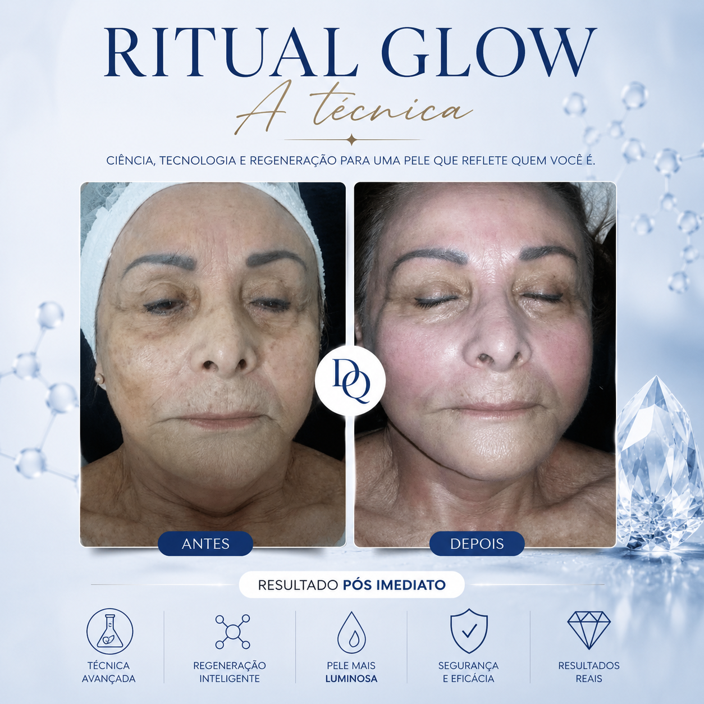
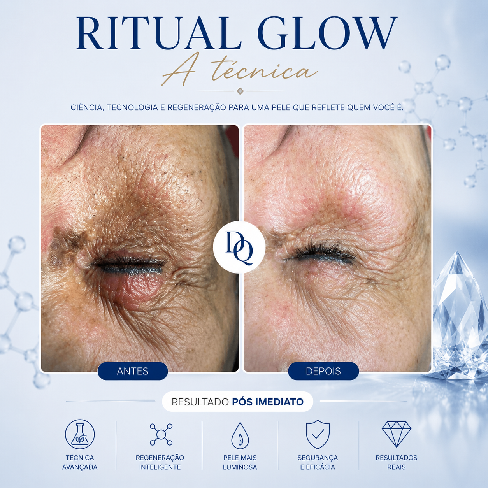

Tratamento de Rejuvenescimento Facial com Avaliação Individualizada
Nosso atendimento de rejuvenescimento facial em Araruama é especialmente pensado para as necessidades da nossa região litorânea. Sabemos que a exposição solar é um fator que acelera o envelhecimento da pele, e, vivendo em uma região de praia, muitas vezes deixamos de lado os cuidados preventivos ou só buscamos ajuda quando as marcas do tempo já aparecem.
No nosso atendimento, combinamos técnicas não invasivas, seguras e personalizadas. A avaliação inicial identifica o melhor plano, focando tanto na ação preventiva, retardando o envelhecimento, quanto na abordagem tratativa, restaurando a firmeza e o viço da pele. Assim, cuidamos do futuro da sua pele e, ao mesmo tempo, regeneramos os sinais do tempo. Cada passo é pensado para o seu rosto, com suporte informativo e acompanhamento em cada etapa.
Como o clima da Região dos Lagos influencia o envelhecimento da pele?
A Região dos Lagos é conhecida pelas belas praias, dias ensolarados e pela intensa exposição à luz solar durante grande parte do ano. Embora esse estilo de vida ao ar livre traga inúmeros benefícios, ele também pode acelerar processos relacionados ao envelhecimento da pele quando os cuidados preventivos não são realizados de forma adequada.
A radiação ultravioleta (UV) é considerada um dos principais fatores responsáveis pelo envelhecimento cutâneo precoce. A exposição frequente ao sol pode favorecer o aparecimento de manchas, alterações na textura da pele, perda de elasticidade, ressecamento e formação de linhas de expressão. Esse processo é conhecido como fotoenvelhecimento e pode ocorrer de forma gradual ao longo dos anos, muitas vezes sem que a pessoa perceba as mudanças iniciais.
Em cidades litorâneas como Araruama, Praia Seca, Iguabinha e outras localidades da Região dos Lagos, é comum que a população mantenha contato frequente com ambientes externos, praias, esportes ao ar livre e atividades sob intensa luminosidade solar. Quando a proteção diária não é suficiente, a pele pode sofrer danos cumulativos que se tornam mais evidentes com o passar do tempo.
Por que a pele perde colágeno ao longo dos anos?
O colágeno é uma das proteínas mais importantes para a estrutura da pele. Ele é responsável por contribuir para a firmeza, sustentação e resistência dos tecidos. Durante a juventude, o organismo produz colágeno de forma mais eficiente, ajudando a manter a pele com aparência uniforme e saudável.
Com o avanço da idade, essa produção natural tende a diminuir progressivamente. A redução gradual do colágeno pode favorecer o surgimento de flacidez facial, linhas de expressão mais evidentes, perda de definição dos contornos do rosto e alterações na textura da pele.
Além do envelhecimento natural, diversos fatores podem acelerar essa redução. A exposição solar excessiva é um dos mais relevantes, pois contribui para a degradação das fibras de colágeno existentes. Outros fatores incluem tabagismo, estresse crônico, noites mal dormidas, alimentação inadequada, poluição ambiental e hábitos de vida que aumentam o estresse oxidativo celular.
Por esse motivo, o cuidado com a pele não deve ser visto apenas como uma abordagem estética, mas também como uma estratégia preventiva. Quanto mais cedo são adotados hábitos saudáveis e protocolos adequados para estimular os mecanismos naturais da pele, maiores são as possibilidades de preservar sua qualidade ao longo dos anos.
A importância da prevenção e da regeneração facial
Os cuidados preventivos podem ajudar a minimizar os efeitos do envelhecimento acelerado causado pelos fatores ambientais e pelo estilo de vida. A avaliação individualizada permite identificar as necessidades específicas de cada pessoa e definir estratégias voltadas para a manutenção da saúde e da qualidade da pele.
No rejuvenescimento facial, o objetivo não é apenas tratar sinais já existentes, mas também estimular mecanismos naturais relacionados à renovação cutânea e à manutenção da firmeza da pele. Cada paciente apresenta características próprias, motivo pelo qual os protocolos são planejados de forma personalizada, considerando idade, histórico, hábitos de vida e condições atuais da pele.
Em uma região com forte influência solar como Araruama e toda a Região dos Lagos, a associação entre prevenção, acompanhamento profissional e cuidados contínuos pode contribuir significativamente para a preservação da qualidade da pele ao longo do tempo.
Por que realizar seu rejuvenescimento facial com Danny Queiroz?
Danny Queiroz atua há mais de 10 anos na área da estética facial, desenvolvendo protocolos personalizados voltados para regeneração da pele, prevenção do envelhecimento precoce e recuperação da qualidade cutânea.
Cada paciente passa por uma avaliação individualizada para identificar as necessidades específicas da pele e definir as técnicas mais adequadas para cada caso.
O acompanhamento inclui orientações detalhadas, suporte durante todo o tratamento e estratégias para manutenção dos resultados a longo prazo.
Quem procura rejuvenescimento facial em Araruama geralmente também pergunta
Qual é o melhor tratamento para flacidez facial?
O melhor tratamento para flacidez facial é aquele que fortalece as estruturas de sustentação do rosto. Trabalho com fortalecimento muscular facial e tratamentos que melhoram a firmeza e a qualidade da pele. O objetivo é promover um rejuvenescimento natural, sem harmonização facial ou mudanças artificiais.
Como estimular a produção natural de colágeno?
A produção natural de colágeno pode ser estimulada por uma combinação de alimentação adequada, proteção solar e tratamentos que ativam os processos regenerativos da pele, favorecendo firmeza e sustentação de forma natural.
O rejuvenescimento facial ajuda nas linhas de expressão?
Sim. O rejuvenescimento facial ajuda a suavizar linhas de expressão ao melhorar a qualidade da pele, estimular a firmeza e otimizar a sustentação dos tecidos. Quando a abordagem é natural e estruturada, os resultados acontecem de forma progressiva, sem alterar a expressão do rosto.
Qual tratamento é indicado para pele envelhecida pelo sol?
O tratamento para pele envelhecida pelo sol deve focar na melhora da qualidade da pele, estímulo da regeneração e fortalecimento da firmeza, de forma progressiva e natural.
Como prevenir o envelhecimento precoce da pele?
A prevenção do envelhecimento precoce envolve principalmente proteção solar diária, hábitos saudáveis e cuidados que mantenham a qualidade, firmeza e estrutura da pele de forma natural.
Tratamento para Flacidez Facial, Linhas de Expressão e Estímulo de Colágeno em Araruama
Flacidez facial
Linhas de expressão
Perda de colágeno
Fotoenvelhecimento
Manchas relacionadas ao envelhecimento
Textura irregular da pele
Perda de luminosidade facial
Prevenção do envelhecimento precoce
Resultados de Tratamentos de Rejuvenescimento Facial
Cada caso possui características próprias e os resultados variam conforme o grau de envelhecimento, adesão ao tratamento e resposta individual.

Caso Clínico 01
Melhora na firmeza e luminosidade da pele.

Caso Clínico 02
Redução de linhas de expressão e melhoria da textura da pele.
Regiões Atendidas
Além do atendimento para rejuvenescimento facial em Araruama, também realizamos atendimento especializado em outras regiões do Rio de Janeiro.
Perguntas Frequentes sobre Rejuvenescimento Facial
Como é feita a avaliação inicial?
A avaliação é uma consulta detalhada, na qual observamos o padrão da sua pele, histórico e objetivos.
Quais técnicas são utilizadas?
Utilizamos técnicas personalizadas, incluindo limpeza nanotecnológica (técnica exclusiva da especialista Danny Queiroz), microagulhamento, jato de plasma e peelings específicos.
O tratamento é doloroso?
A maioria das técnicas é confortável. Usamos anestésicos tópicos quando necessário.
Quantas sessões são necessárias?
O número varia, mas após a avaliação indicamos um plano personalizado.
Posso misturar técnicas?
Sim, aplicamos diferentes técnicas, de acordo com a sua necessidade, para um resultado mais completo.
Quais cuidados devo ter após o tratamento?
Fornecemos um guia detalhado com os cuidados diários, uso de protetor solar e produtos indicados.
O procedimento é seguro?
Sim, todas as técnicas são seguras, realizadas por uma profissional especializada em tratamentos faciais e com experiência de mais de 10 anos.
O tratamento é indicado para todas as idades?
Sim, adaptamos o tratamento à idade e às condições de cada paciente.
Qual a duração das sessões?
Entre 1h e 1:30h. As consultas de tratamento podem ser semanais ou mensais, conforme o plano do tratamento.
Pronta para começar seu tratamento de rejuvenescimento?
Quanto mais cedo você iniciar, mais cedo poderá prevenir o envelhecimento e conquistar uma pele firme e luminosa.